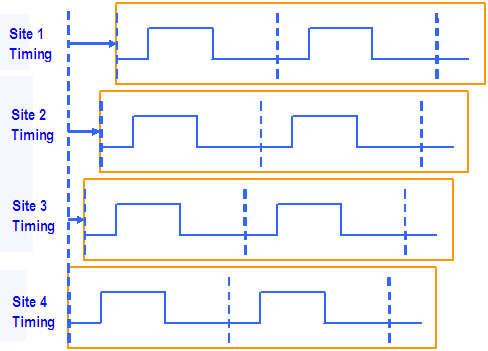
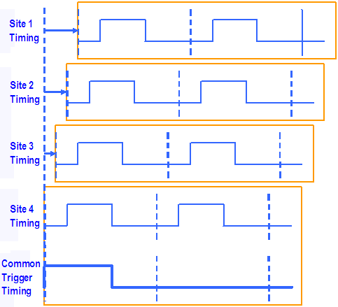
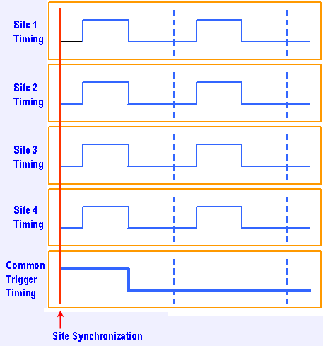

Controlling Site Synchronization
When you execute a multisite test in parallel, you can either start all sites simultaneously, or you can start them one after the other successively, each with a small offset. This is controlled by the setting of the Site Match test suite flag. If this flag is set to OFF, all sites are started simultaneously; if it set to ON, they are started successively.
Selecting the correct option is important in the following two situations:
- The test pattern contains a match loop.
- One and the same channel is shared by the same pin on different sites.
Note that if both these constructs are present in the same setup, an optimal selection is not possible.
Test patterns containing match loops
If all sites are started simultaneously and the test pattern contains a match loop, then the judgment on whether a match has been obtained will be based on the compare results of all active sites. Accordingly, if the match loop fails on one single site the test will be canceled for all sites even if a match is found for all the remaining sites. The option to start all sites with a small offset is intended to enable independent evaluation of a match loop for every site. In this way, the test can be continued on one site even if it has been canceled on another site because of a failing match loop.
The following figure shows this behavior:

The order in which the sites are started is determined by SmarTest. By the way, do not confuse this successive start with serial execution, where the second site is only started after the first site has finished its test.
Using the same channel for triggering several sites
If a multisite test associates the same channel with the same pin on more than one site, and if it is executed in parallel or semi-parallel, successive starting can lead to problems.
The reason for this is that if a digital channel is used, for example, as a common trigger for triggering analog modules on several parallel sites, the trigger signal will normally be generated according to the timing of the highest numbered site of the sites that share the digital channel. Now if the sites are started successively, this will have the effect of delaying the trigger signal as shown in the following figure:

The analog measurements on sites 1 through 3 are now executed with unexpected timing, because the digital vectors are generated based on the independent timing for each site, but the analog modules used on each site are triggered according to the trigger timing of the highest numbered site.
To avoid this problem, all sites must be started synchronously if a shared analog module is used in a multisite test. This is shown below.

Default behavior
To meet the requirements of both match loops and shared trigger channels as far as possible, SmarTest by default starts the sites successively, provided that it does not find a shared channel in the pin configuration. If it does, it will start all sites synchronously. In this case individual evaluation of match loops will not be possible.
How to Change the Synchronization.
You can change the synchronization behavior on the test flow level with the Site Match Mode test flow flag, or on the test suite level with the Site Match test suite flag.
- If the flag is set to ON, SmarTest will start the sites successively even if shared pins are present.
- If the flag is set to OFF, all sites will be started simultaneously.
If a test flow contains both match loops and shared analog modules, but not within the same test suite, you can configure site synchronization individually for each test suite with the Site Match test suite flag.
If match loops are to be combined with shared pins in the same test suite of a multisite test flow, switch the Site Match test suite flag to off and consult the section Match Loops for possible workarounds concerning the match loops.
Functional changes
- Introduced before SmarTest 6.3.2